Testbericht 15 – Skizzen: Ecken, Offset, Stroke
1 Auftrag und Ergebnis
Schritt 2 von Plan 17: Ecken in Skizzen (corner(r = …), corner(chamfer = …)) und an beliebigen 2D-Profilen (fillet2d, chamfer2d, mit Zonen wie in 3D), offset OpenSCAD-kompatibel und exakt für Geraden und Bögen, stroke für offene Pfade; Darstellung und Griffe in UI und CLI. Grundlage ist ein neues Modul cad_kernel::region2: exakte Booleans von Regionen aus Geraden und Kreisbögen, aus denen Offset, Strich und die Auswertung beliebiger 2D-Teilbäume gebaut sind. Text, SVG-Import (Schritt 3) und der Zeichenmodus (Schritt 4) gehören nicht dazu.
- Flächen gegen Formeln (Abschnitt 7): alle 18 Fälle innerhalb der Volumenintegration von SMLib (≤ 5.0·10−4 relativ) – Rechteck mit verrundeten Ecken = ab − (4 − π) r², Offset eines Quadrats = (a + 2r)² − (4 − π) r², Strich eines Kreisbogens = Ringsektor + Kappen.
- OpenSCAD 2021.01 (Abschnitt 4): 24 Einzelfälle, Abweichung der Fläche ≤ 0,026 % (polygonal, d. h.
deltaan Polygonen: ≤ 0,0002 %), Hülle ≤ 0,0009 mm; compare.py mit den neuen Modellen 34–36: –. Die Restabweichung beirist die Facettierung von OpenSCAD ($fn = 128): wir rechnen exakte Bögen. - STEP: Bögen als
CIRCLE, extrudierte Bögen als Zylinder, keine B-Spline-Kurven und keine angenäherten Kanten in den neuen Beispielen; OpenCASCADE liest sie mit gleichem Volumen (verify.py).
2 corner() in Skizzen
Regeln (Plan 17.9): corner() zwischen zwei Segmenten rundet die Ecke zwischen ihnen – die Schlusslinie von close() zählt als Segment, corner() vor close() rundet also die Ecke zur Schlusslinie; corner() direkt nach start(p) rundet die Startecke (zwischen letztem und erstem Segment); corner() nach dem letzten Segment einer Kontur, die am Start endet (keine Schlusslinie nötig), ebenfalls. Die Skizze wird zuerst ohne Ecken aufgebaut (tangentiale Bögen und line(length) beziehen sich auf die spitze Ecke), dann werden alle Ecken einer Kontur auf den ursprünglichen Segmenten berechnet; brauchen zwei Ecken überlappende Teile eines Segments, scheitern beide mit dem größten gemeinsamen Wert – unabhängig von der Reihenfolge. Die Verrundung ist ein Segment der corner-Zeile (Hervorhebung), eine Startecke steht am Ende der Kontur. Fase: Schnittpunkte im Abstand d vom Eckpunkt.
| Segmente | Lösung |
|---|---|
| Gerade – Gerade, Gerade – Bogen, Bogen – Bogen | exakt: Mittelpunkt = Schnitt der um r versetzten Kurven (Gerade/Gerade, Gerade/Kreis, Kreis/Kreis mit R ± r je nach Seite), Fußpunkte auf den Segmenten, kürzester Kandidat |
| mit Bézier oder Spline | Newton auf a(u) + r·na(u) = b(w) + r·nb(w) (Startwert aus den Tangenten), Abbruch bei Rest 10−13 der Größe, Warnung über 10−6; die Kurve wird am Parameter gekürzt (bleibt B-Spline). Test: Gerade–Bézier, Rest < 10−9, Abstand Mittelpunkt–Kurve = r auf 10−6 |
Fehler an der corner-Zeile: Radius passt nicht („höchstens ≈ r“, per Bisektion), tangentiale Ecke („keine Ecke“), Spitze (180°), nach close(), vor start, zweimal an einer Ecke, Start/Ende einer offenen Kontur, Wert ≤ 0. Griff: Radius auf der Mitte der Verrundung, Basis im Eckpunkt, linear in r (UI-Test E01).
// Skizzen Schritt 2: corner, fillet2d, offset, stroke
linear_extrude(2) sketch {
start([0, 0]);
line(to = [30, 0]);
corner(r = 4);
line(to = [30, 20]);
corner(r = 4);
line(to = [0, 20]);
corner(chamfer = 3);
close();
}
translate([40, 0, 0]) linear_extrude(2) fillet2d(3) square([30, 20]);
translate([0, 30, 0]) linear_extrude(2) offset(r = 2) square([20, 10]);
translate([40, 30, 0]) linear_extrude(2) stroke(2, cap = "flat") sketch(closed = false) {
start([10, 0]);
arc(center = [0, 0], angle = 90);
}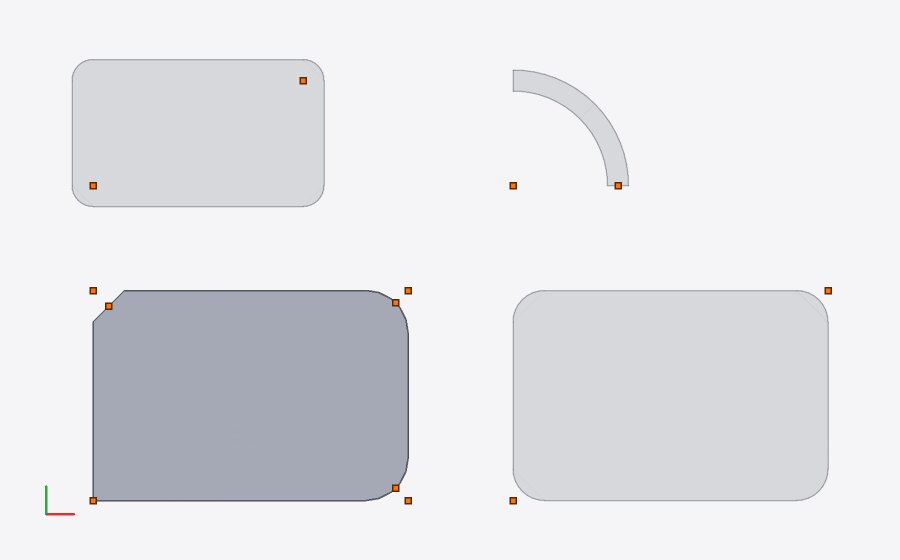
cad render --line 5 --view top --show handles: die Skizze hervorgehoben, Griffe (Radius auf den Verrundungen)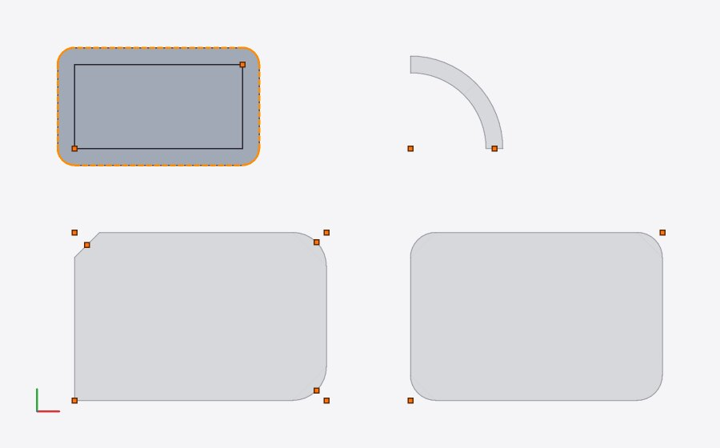
--line 13: offset – Ausgangskontur, Offset-Kontur gestricheltlinear_extrude(1) sketch {
start([0, 0]);
line(to = [20, 0]);
corner(r = 12);
line(to = [20, 8]);
corner(r = 1);
arc(to = [10, 18]);
line(to = [0, 8]);
corner(r = 2);
corner(r = 3);
close();
}
translate([30, 0, 0]) linear_extrude(1) fillet2d(1.5) square([10, 2]);
translate([50, 0, 0]) linear_extrude(1) offset(r = -6) square(10);
translate([70, 0, 0]) linear_extrude(1) offset(1) sketch(closed = false) { start([0, 0]); line(to = [5, 0]); }
cases/fehler.scad:10:5: Fehler (Auswertung): an dieser Ecke steht schon ein `corner()` cases/fehler.scad:4:5: Fehler (Auswertung): corner(): Radius 12 passt nicht zwischen die Segmente (höchstens ≈ 8) cases/fehler.scad:6:5: Fehler (Auswertung): corner(): keine Ecke, die Segmente gehen tangential ineinander über cases/fehler.scad:13:41: Fehler (Kernel): Ecke bei [0, 0]: Radius 1.5 passt nicht (höchstens ≈ 1) cases/fehler.scad:13:41: Fehler (Kernel): Ecke bei [10, 0]: Radius 1.5 passt nicht (höchstens ≈ 1) cases/fehler.scad:13:41: Fehler (Kernel): Ecke bei [10, 2]: Radius 1.5 passt nicht (höchstens ≈ 1) cases/fehler.scad:13:41: Fehler (Kernel): Ecke bei [0, 2]: Radius 1.5 passt nicht (höchstens ≈ 1) cases/fehler.scad:13:41: Warnung (Kernel): keine Ecke im Profil cases/fehler.scad:14:41: Warnung (Kernel): offset(-6) lässt vom Profil nichts übrig cases/fehler.scad:15:23: Fehler (Kernel): offset: offene Skizze ist kein Profil (für Pfade `stroke(w)` verwenden) cases/fehler.scad:15:41: Fehler (Kernel): offset: offene Skizze ist kein Profil (für Pfade `stroke(w)` verwenden) cases/fehler.scad: 9 Fehler, 2 Warnungen
3 fillet2d und chamfer2d
fillet2d(r) { profil; zone; … } / chamfer2d(d): das erste Kind ist das Profil (beliebige Herkunft: square, polygon, Skizzen, 2D-Booleans), weitere Kinder sind Zonen (2D-Formen und zone(linie | ebene, d)). Ecken sind Stöße mit Knick, konvex und konkav; die Verrundung liegt auf der Innenseite des Knicks (konvex: Material weg, konkav: Material dazu). Auswahl wie in 3D: select = "inside" (Standard) – der Eckpunkt liegt in einer Zone; "touch" – auch wenn nur das ersetzte Stück des Profils eine Zone berührt. Inline-Hinweis „n Ecken“, leere Auswahl ist eine Warnung, zu große Radien sind Fehler je Ecke (die übrigen Ecken werden gerundet). Verschachtelte Blöcke wirken von innen nach außen; die Übergänge einer Verrundung sind tangential und zählen nicht. Eine einzelne geschlossene Kontur behält ihre Segmente (Splines bleiben Splines), alles andere geht durch die exakte Region.
// Zweck: Winkelhalter mit verrundetem Profil (Plan 17.3) – L-Profil als Polygon; `fillet2d`
// mit einer Zone rundet nur die Innenecke groß (Kerbwirkung), ein äußerer `fillet2d` alle
// übrigen Ecken klein (die Übergänge des großen Bogens sind tangential und zählen nicht);
// extrudiert, mit Langlöchern aus `stroke` einer Strecke (runde Enden).
t = 6; // Wandstärke
a = 40; // Schenkellänge
h = 30; // Breite des Halters
r_innen = 5;
module profil() polygon([[0, 0], [a, 0], [a, t], [t, t], [t, a], [0, a]]);
module langloch(von, bis, d = 4.5) stroke(d) sketch(closed = false) {
start(von);
line(to = bis);
}
difference() {
linear_extrude(h) fillet2d(1) {
fillet2d(r_innen) {
profil();
translate([t, t]) circle(1); // Zone: die Innenecke
}
}
// Langlöcher im Boden (xz-Ebene, durch die Wand in y)
translate([0, -1, 0]) rotate([-90, 0, 0]) linear_extrude(t + 2) langloch([16, -h / 2], [32, -h / 2]);
// und in der Wand (yz-Ebene, durch die Wand in x)
translate([-1, 0, 0]) rotate([90, 0, 90]) linear_extrude(t + 2) langloch([16, h / 2], [32, h / 2]);
}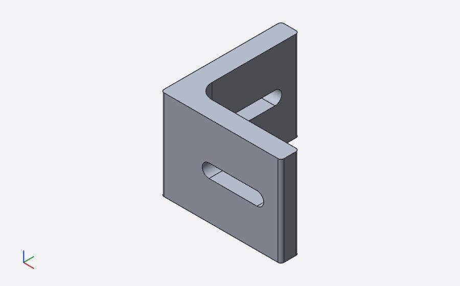
stroke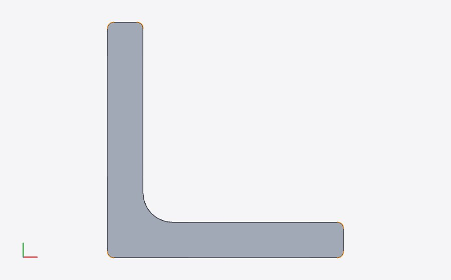
--line 18 von oben: die fünf neuen Eckbögen des äußeren BlocksKontext: Datei
Z.18: linear_extrude(h) fillet2d(1) {
[2] linear_extrude Z.18:5–23:6 ok
Hülle [0, 0, 0] – [40, 40, 30]
Volumen 13448.7611 mm³, Fläche 5567.8233 mm²
[3] fillet2d Z.18:23–23:6 ok
Hülle [0, 0, 0] – [40, 40, 0]
ausgewählte Kanten: 5
Hinweis: 5 Ecken
Griff Height #0: Wert ["30"] bei [0, 0, 30] (1 Literal(e))
4 offset: Semantik und OpenSCAD-Vergleich
Wie OpenSCAD 2021.01: erstes Positionsargument r, ohne Argumente r = 1, r gewinnt vor delta, chamfer nur mit delta. r > 0: konvexe Ecken werden exakte Bögen, konkave bleiben spitz; r < 0: konvexe bleiben spitz, konkave werden rund, schmale Teile verschwinden, Löcher wachsen. delta: Ecken bis zum Schnitt der versetzten Kanten (ohne Gehrungsgrenze – OpenSCAD setzt miter_limit 106, das spitze Dreieck unten belegt es), chamfer = true schneidet wie Clippers jtSquare senkrecht zur Winkelhalbierenden im Abstand delta vom Eckpunkt (an OpenSCAD gemessen: 196 − 4·(2√2 − 2)² für das Quadrat). Exakt: Region ∪ (Bänder ± r längs der Segmente ∪ Kreise in den Ecken) bzw. Region ∖ (…) für r < 0 – die Minkowski-Summe mit dem Kreis aus Geraden und Bögen; delta: einseitige Bänder und Eckstücke (Gehrung/Fase) an auseinanderlaufenden Ecken.
Je Fall eine Datei linear_extrude(1) … (Volumen = Fläche, reports/tmp/report15/openscad/); OpenSCAD exportiert STL ($fn = 128 bei Rundungen wie make-reference.py), wir messen exakt (cad measure). „exakt“: geschlossene Formel, wo es eine gibt.
| Fall | OpenSCAD mm² | wir mm² | Abw. | exakt | OpenSCAD − exakt | Hülle Δ mm |
|---|---|---|---|---|---|---|
| offset(r = 2) square(10) | 192,5613 | 192,5664 | 0,0026 % | 192,5664 | -0,0026 % | 0,0000 |
| offset(r = −2) square(10) | 36,0000 | 36,0000 | 0,0000 % | 36,0000 | 0,0000 % | 0,0000 |
| offset(3) circle(r = 5) – positional = r | 201,0091 | 201,0621 | 0,0264 % | 201,0619 | -0,0263 % | 0,0009 |
| offset(r = 1.5) L-Profil (konkave Ecke bleibt spitz) | 382,5822 | 382,5857 | 0,0009 % | – | – | 0,0000 |
| offset(r = −1.5) L-Profil (konkave Ecke wird rund) | 145,4836 | 145,4829 | -0,0005 % | – | – | 0,0000 |
| offset() square(10) – r = 1 | 143,1403 | 143,1416 | 0,0009 % | 143,1416 | -0,0009 % | 0,0000 |
| offset(r = 2, delta = 1) – r gewinnt | 192,5613 | 192,5664 | 0,0026 % | 192,5664 | -0,0026 % | 0,0000 |
| offset(delta = 2) square(10) | 196,0000 | 196,0000 | 0,0000 % | 196,0000 | 0,0000 % | 0,0000 |
| offset(delta = 2, chamfer = true) square(10) | 193,2548 | 193,2548 | 0,0000 % | 193,2548 | -0,0000 % | 0,0000 |
| offset(delta = −2) square(10) | 36,0000 | 36,0000 | 0,0000 % | 36,0000 | 0,0000 % | 0,0000 |
| offset(delta = 1) Stern (10 Spitzen) | 220,8551 | 220,8553 | 0,0001 % | – | – | 0,0000 |
| offset(delta = 1, chamfer = true) Stern | 216,9401 | 216,9405 | 0,0002 % | – | – | 0,0000 |
| offset(delta = 1) spitzes Dreieck (5,7°): Gehrung ohne Grenze | 48,2047 | 48,2047 | 0,0002 % | – | – | 0,0000 |
| offset(delta = 1.5) L-Profil | 385,0000 | 385,0000 | 0,0000 % | – | – | 0,0000 |
| offset(delta = −1.5) L-Profil | 145,0000 | 145,0000 | 0,0000 % | – | – | 0,0000 |
| offset(delta = −1.5, chamfer = true) L-Profil | 145,3860 | 145,3860 | -0,0000 % | – | – | 0,0000 |
| Platte 30 × 20 mit Kreis- und Quadratloch (ohne offset) | 485,7547 | 485,7345 | -0,0042 % | – | – | 0,0000 |
| offset(r = 1) Platte: Löcher kleiner | 638,8831 | 638,8672 | -0,0025 % | – | – | 0,0000 |
| offset(r = −1) Platte: Löcher größer | 326,3437 | 326,3186 | -0,0077 % | – | – | 0,0000 |
| offset(r = 4.5) Platte: beide Löcher geschlossen | 1.113,5916 | 1.113,6173 | 0,0023 % | – | – | 0,0000 |
| offset(delta = 1) Platte | 639,7427 | 639,7256 | -0,0027 % | – | – | 0,0000 |
| offset(r = 1.5) zweier Quadrate im Abstand 2: wachsen zusammen | 322,5843 | 322,5884 | 0,0013 % | – | – | 0,0000 |
| offset(r = −1): Steg 1,5 mm verschwindet, zwei Teile | 128,3124 | 128,3117 | -0,0005 % | – | – | 0,0000 |
| offset(r = 2) offset(r = −2): Öffnen – Ecken rund, schmale Teile weg | 357,9701 | 357,9743 | 0,0012 % | – | – | 0,0002 |
Die Abweichung unserer Werte von der Formel ist dort, wo es eine gibt, die Integrationsgenauigkeit von SMLib (Abschnitt 7); die von OpenSCAD die Facettierung (Kreisbögen als 128-Ecke: Sehnen innen, etwas weniger Fläche) bzw. Clippers ganzzahlige Koordinaten (Fase des Quadrats: 3·10−7).
compare.py mit den neuen Modellen (examples/openscad-compat/34_offset_round.scad, 35_offset_delta.scad, 36_offset_holes.scad; Referenz mit make-reference.py nur für diese Dateien, stl_stats.classify zählt offset(r) zu den Rundungen):
// Zweck: Gehäusedeckel (Plan 17.3) – der Umriss ist eine Skizze mit verrundeten Ecken
// (`corner`), der Steckrand ein Ring aus zwei Offsets desselben Umrisses nach innen
// (`offset(r = -…)`: die Eckradien werden kleiner, bleiben aber exakte Bögen), dazu vier
// Schraubenlöcher in den Ecken.
l = 80; // Außenmaß
b = 50;
r = 6; // Eckradius außen
wand = 2; // Wandstärke des Gehäuses
spiel = 0.2; // Luft zwischen Steckrand und Wand
steg = 1.5; // Breite des Steckrands
module umriss() sketch {
start([0, 0]);
corner(r = r);
line(to = [l, 0]);
corner(r = r);
line(to = [l, b]);
corner(r = r);
line(to = [0, b]);
corner(r = r);
close();
}
difference() {
linear_extrude(2) umriss();
for (p = [[r, r], [l - r, r], [l - r, b - r], [r, b - r]])
translate([p[0], p[1], -1]) cylinder(h = 4, d = 2.5);
}
translate([0, 0, 2]) linear_extrude(5) difference() {
offset(r = -(wand + spiel)) umriss();
offset(r = -(wand + spiel + steg)) umriss();
}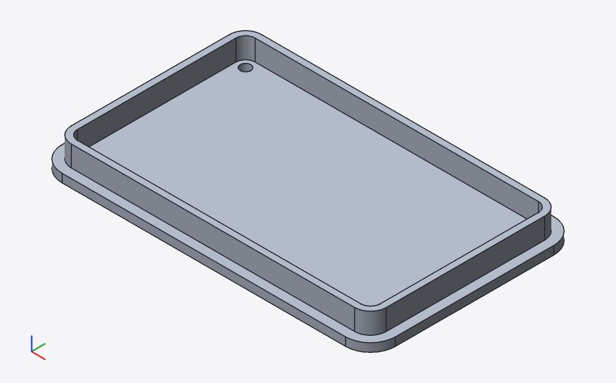
corner(r = 6), Steckrand als Ring aus zwei Offsets nach innen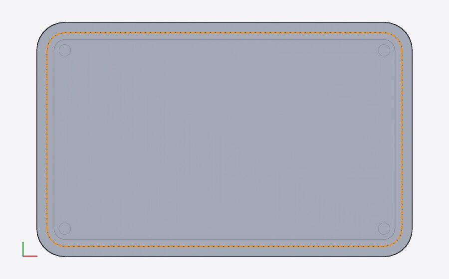
--line 30: Ausgangskontur und Offset-Kontur (gestrichelt), die Eckradien 6 → 3,8 bleiben Bögen5 stroke
stroke(w, cap = "round" | "flat" | "square", join = "round" | "miter" | "bevel") (Standard rund/rund): Kinder sind offene Skizzen (Pfade; eine am Start endende Kontur ist geschlossen) und beliebige 2D-Profile (ihr Rand als geschlossene Pfade: stroke(1) circle(5) ist ein Ring). Bänder der halben Breite längs der Segmente (Gerade: Rechteck, Bogen: Ringsektor), Stöße rund, mit Gehrung (bis 4 Halbbreiten wie SVGs stroke-miterlimit, sonst Fase) oder Fase, Enden rund, flach oder um w/2 verlängert; sich kreuzende Pfade werden vereinigt.
// Zweck: Kabelkanal entlang eines Pfads (Plan 17.3) – der Pfad ist eine offene Skizze aus
// Geraden, einem tangentialen Bogen und einer verrundeten Ecke (`corner`); `stroke` macht
// daraus den Boden (volle Breite, flache Enden) und die Wände (Differenz mit einem schmaleren
// Strich, dessen eckige Enden über den Kanal hinausreichen: die Enden bleiben offen); dazu
// Rippen im Boden als Zickzack mit Gehrung.
breite = 16; // außen
wand = 2;
hoehe = 12;
boden = 2;
module pfad() {
sketch(closed = false) {
start([0, 0]);
line(to = [40, 0]);
arc(to = [60, 20]); // tangential: Viertelkreis r = 20
line(to = [60, 50]);
corner(r = 12);
line(to = [20, 50]);
}
}
linear_extrude(boden) stroke(breite, cap = "flat") pfad();
linear_extrude(hoehe) difference() {
stroke(breite, cap = "flat") pfad();
stroke(breite - 2 * wand, cap = "square") pfad();
}
// Rippen auf dem Boden des geraden Anfangsstücks
translate([0, 0, boden]) linear_extrude(1) stroke(1.2, cap = "round", join = "miter") sketch(closed = false) {
start([4, -4]);
for (i = [1 : 8]) line(to = [4 + 4 * i, i % 2 == 0 ? -4 : 4]);
}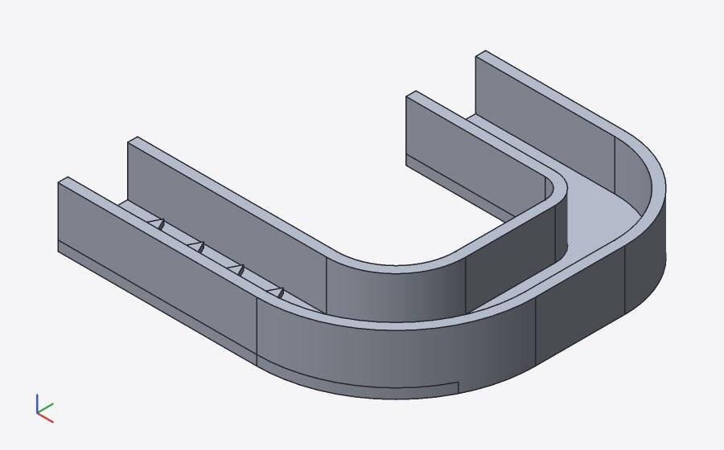
stroke eines Pfads mit tangentialem Bogen und corner(r = 12), Rippen als Zickzack mit Gehrung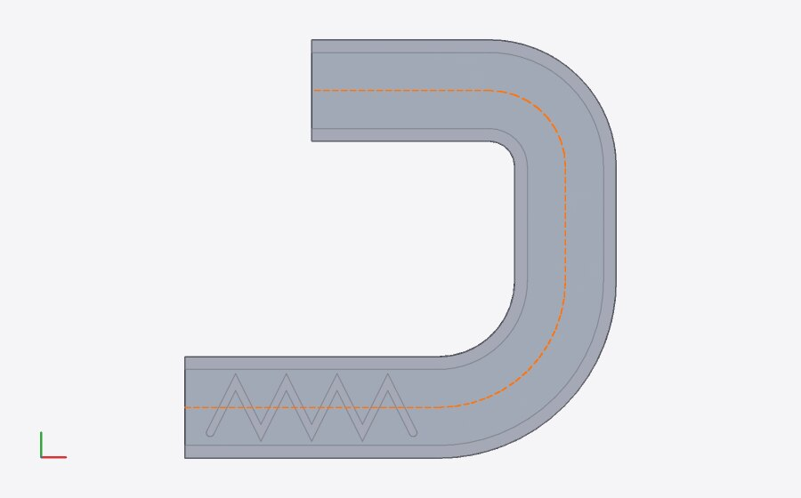
--line 22: Mittellinie des Bodens6 Kernel: exakte 2D-Regionen
region2::combine(operanden, prädikat): alle Segmente werden an ihren exakten Schnittpunkten geteilt (Gerade–Gerade, Gerade–Kreis, Kreis–Kreis einschließlich Berührung, Überlappung kollinearer Geraden und gleicher Kreise; Punkte im Abstand 10−9 der Größe verschmelzen), doppelte Stücke entfallen. Jedes Stück bleibt, wo das Prädikat links und rechts verschieden ist (Testpunkte neben der Stückmitte; Windungszahl je Füllregel über den Strahl nach +x, Bögen in y-monotone Stücke geteilt), mit der Region links. Verbinden zu Schleifen mit der engsten Drehung an gemeinsamen Ecken, Stücke derselben Geraden bzw. desselben Kreises verschmelzen. Ergebnis: äußere Schleifen gegen, Löcher im Uhrzeigersinn, nur Geraden und Bögen.- 2D-Teilbäume: das Prädikat ist der boolesche Ausdruck der Blätter (Füllregel je Blatt: Polygone even-odd, sonst nonzero); ein Zufallstest vergleicht 60 Booleans aus Kreisen, Rechtecken, Polygonen und Skizzen mit dem Polygon-Clipping der Anzeige (≤ 10−3).
- B-Splines gehen als G1-Biarcs ein (zwei tangentiale Bögen je Stück, Stücke halbiert bis zur Abweichung ≤ 1 µm, höchstens 10−5 der Modellgröße). Begründung: der Offset einer B-Spline ist keine B-Spline, der eines Bogens ein Bogen – der Offset ist exakt zur Näherung und tangentenstetig, Schnitte bleiben geschlossen lösbar, STEP enthält Linien und Kreise; 1 µm liegt weit unter Druck- und Fertigungstoleranzen und über der Rechengenauigkeit.
- Engine:
Op::Offset,Op::Blend2,Op::Strokesind 2D-Knoten;profile::liftberechnet die Region (zwischengespeichert nach Teilbaum-Inhalt) und gibt sie als Skizzen-Blätter weiter – Extrude, Revolve, Loft, Sweep und STEP sehen exakte Geraden und Bögen.cad_engine::region_2dliefert die Region eines 2D-Knotens (Hüllen der Kompatibilitätstests).
Korrektur aus Schritt 1 (Bögen über 90°). Die Fassade baut einen Bogen als rationale quadratische B-Spline mit Spannen ≤ 90°; ein längerer Bogen ist eine Kurve aus mehreren Spannen. Booleans mit Extrusionen solcher Kurven scheiterten in SMLib je nach Lage (Ring aus zwei 180°-Bögen ∪ Quader, um 157,5° gedreht: „volume 924.12 impossible for operands 976.79, 43.2“; mit 4 × 90° richtig). Die Engine teilt Bögen über 90° jetzt vor dem Kernel in gleiche Stücke ≤ 90° (profile::split_arcs; Extrude, Revolve, Sweep – nicht Loft); ein Halbkreis wird zwei Zylinderflächen. Regressionstest ring_of_long_arcs_unites_with_a_box: Bögen von 180°, 120°, 90° und 360° je mit acht Lagen des Quaders, Volumen = 3 × exakte 2D-Fläche der Vereinigung (≤ 10−5). Dabei gefunden: die Windungszahl der Region nahm Bogenendpunkte aus den Winkeln (Rundung ~10−15), ein Strahl genau durch einen Eckpunkt zählte dann falsch (Ring aus drei 120°-Bögen ohne Loch) – jetzt gelten die gemeinsamen Eckpunkte der Schleife (Test rings_of_arcs_of_any_sweep).
| Modell | Flächen | CIRCLE | LINE | B-Spline-Kurven | Flächentypen | angenähert |
|---|---|---|---|---|---|---|
| skizze_deckel | 32 | 32 | 52 | 0 | cylinder 16, plane 16 | 0 / 0 |
| skizze_halter | 22 | 20 | 40 | 0 | cylinder 10, plane 12 | 0 / 0 |
| skizze_kabelkanal | 61 | 32 | 142 | 0 | cylinder 14, plane 47 | 0 / 0 |
| 34_offset_round | 54 | 34 | 92 | 0 | cylinder 17, plane 37 | 0 / 0 |
| 36_offset_holes | 99 | 62 | 187 | 0 | cylinder 31, plane 68 | 0 / 0 |
OpenCASCADE (tests/step/verify.py) für die neuen Modelle (Spalten: Körper, Flächen, V Kernel, V OCCT, dV, dA, dBox, Flächentypen):
7 Messwerte: Flächen gegen Formeln, Laufzeit
Je Fall linear_extrude(1) … (reports/tmp/report15/cases/), cad measure --volume mit dem Release-Build (Zeit: ganzer CLI-Aufruf ohne Daemon). Die Geometrie ist exakt; die Abweichung ist die der Volumenintegration in SMLib.
| Fall | Kernel mm² | Formel mm² | rel. Abw. | ms |
|---|---|---|---|---|
fillet2d(4) square([30, 20]): ab − (4 − π) r² | 586,2655 | 586,2655 | 6.3·10−9 | 52 |
dasselbe als Skizze mit vier corner(r = 4) (Startecke direkt nach start) | 586,2655 | 586,2655 | 6.3·10−9 | 61 |
fillet2d(5) square(10): die Geraden verschwinden, ein Kreis | 78,5398 | 78,5398 | 2.4·10−8 | 58 |
chamfer2d(2) square([30, 20]): ab − 4 · d²/2 | 592,0000 | 592,0000 | 0 | 50 |
| L-Profil, alle Ecken r 2: 5 konvexe (−), 1 konkave (+) je (1 − π/4) r² | 252,5664 | 252,5664 | 5.9·10−9 | 72 |
| dasselbe, nur die konkave Ecke (Zone) | 256,8584 | 256,8584 | 2.1·10−10 | 59 |
offset(r = 2) square(10): (a + 2r)² − (4 − π) r² | 192,5664 | 192,5664 | 3.8·10−9 | 54 |
offset(r = 0.5) square(20) | 440,7854 | 440,7854 | 8.0·10−10 | 51 |
offset(r = 1) eines Rings 10/4: π (11² − 3²) | 351,8587 | 351,8584 | 1.0·10−6 | 102 |
offset(delta = 2, chamfer = true) square(10): Schnitt im Abstand 2 | 193,2548 | 193,2548 | 0 | 45 |
stroke(2, cap = "flat") eines Viertelkreises r 10: Ringsektor | 31,4159 | 31,4159 | 9.5·10−8 | 54 |
| dasselbe mit runden Kappen: Ringsektor + π (w/2)² | 34,5575 | 34,5575 | 4.1·10−7 | 67 |
| dasselbe mit eckigen Kappen: Ringsektor + w² | 35,4159 | 35,4159 | 1.1·10−7 | 46 |
| Polylinie mit rechtem Winkel, w 2, Gehrung: Bänder + 1 | 40,0000 | 40,0000 | 0 | 50 |
| dasselbe, runder Stoß: Bänder + π/4 | 39,7854 | 39,7854 | 8.8·10−10 | 59 |
| dasselbe, Fase: Bänder + 1/2 | 39,5000 | 39,5000 | 0 | 41 |
stroke(2) circle(10): Ring π (11² − 9²) | 125,6639 | 125,6637 | 1.2·10−6 | 102 |
Viertelkreis r 10, corner(r = 1) zwischen Gerade und Bogen (geschlossene Form) | 78,2860 | 78,3252 | 5.0·10−4 | 48 |
Laufzeit (Release, cad check, bester von drei Läufen, ganzer Aufruf): Zahnrad mit 160 Ecken und Bohrung – offset(r = 0.5), fillet2d(0.4) aller 160 Ecken – und stroke einer Spline, nur 2D: 60 ms; dasselbe extrudiert (Kernel): 1.798 ms. Beispiele: Deckel 413 ms, Halter 112 ms, Kabelkanal 927 ms (überwiegend Kernel-Booleans).
8 UI: Darstellung und Griffe
Cursor auf offset: die Kinder als Umriss (Ausgangskontur), die Offset-Kontur gestrichelt in der Akzentfarbe; auf stroke: der Pfad als Umriss, die Mittellinie gestrichelt; auf fillet2d/chamfer2d: Zonen blau, das Profil vor dem Verrunden als Umriss, die neuen Eckstücke wie ausgewählte Kanten, „n Ecken“ an der Zeile; auf corner: die Verrundung als aktives Segment der Skizze mit Radius-Griff. Die Hilfslinien kommen von der Engine (SceneNode.guides: source, result, centerline). Prüfungen über den Zustand der UI (window.__cad) und Pixel der Ebenen (guide:offset, guide:centerline, sketch:active).
E01 Radius-Griff von corner()
Cursor auf einer corner-Zeile: die Verrundung ist das Segment dieser Zeile (dick in der Akzentfarbe), der Radius-Griff sitzt auf der Bogenmitte und bewegt sich linear mit r vom Eckpunkt weg. Ziehen (Alt: frei) schreibt das Literal; die Nachbarsegmente werden neu gekürzt.
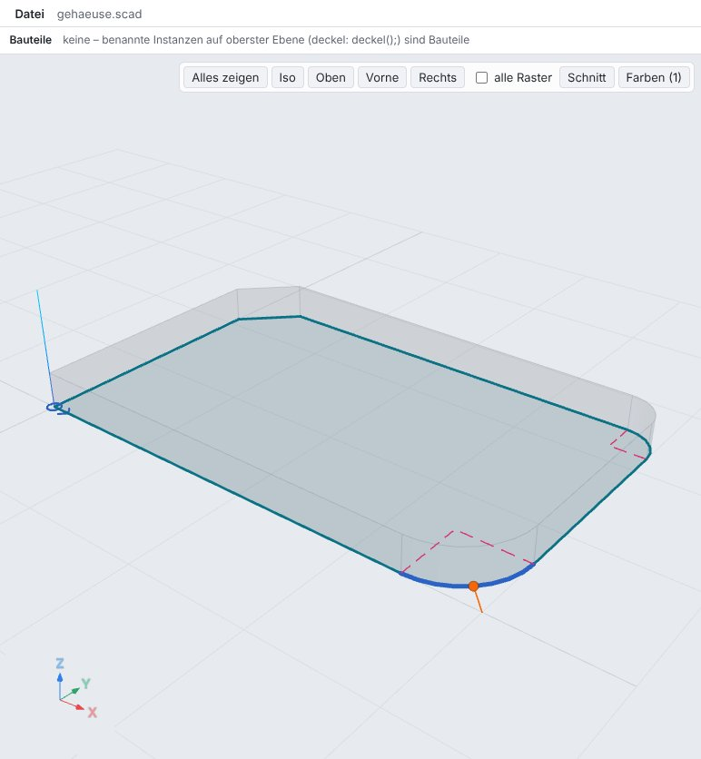
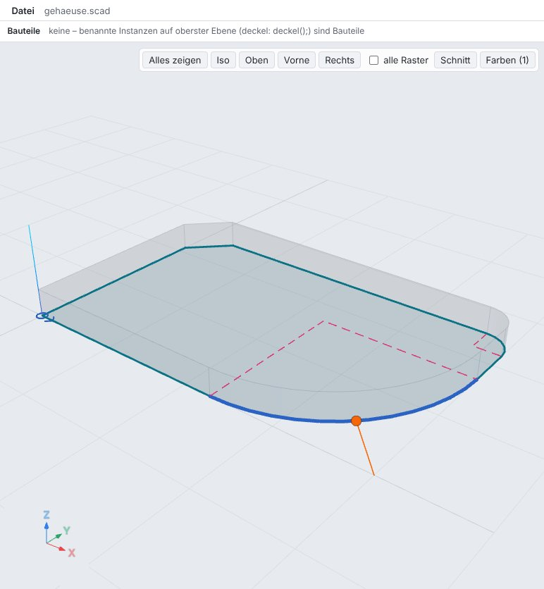
linear_extrude(3) sketch {
start([0, 0]);
line(to = [40, 0]);
corner(r = 6);
line(to = [40, 25]);
corner(r = 3);
line(to = [0, 25]);
corner(chamfer = 4);
close();
}- Griff: radius, Wert 6
- Literal: 6 → 17
- Pixel des aktiven Bogens: 835
- andere Zeilen unverändert
E02 fillet2d mit Zone
Der innere Block rundet nur die Ecke in der Zone (Kreis um [t, t], blau) mit r = 5; der äußere alle übrigen Ecken mit r = 1 – die Übergänge des großen Bogens sind tangential und zählen nicht. Die neuen Eckbögen sind wie ausgewählte Kanten gefärbt, die Anzahl steht als Inline-Hinweis an der Zeile.
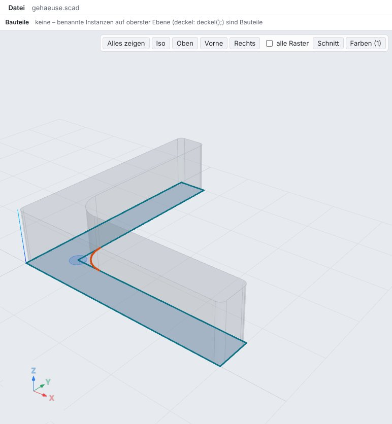
t = 6;
linear_extrude(10) fillet2d(1) {
fillet2d(5) {
polygon([[0, 0], [40, 0], [40, t], [t, t], [t, 40], [0, 40]]);
translate([t, t]) circle(1.5);
}
}- Zone: 1 (blau)
- Hinweis Zeile 3: 1 Ecke
- Hinweis Zeile 2: 5 Ecken
- ausgewählte Kanten (außen): 5
E03 offset: Darstellung
Cursor auf offset: das Profil der Kinder als Umriss (Ausgangskontur), darüber die Offset-Kontur gestrichelt in der Akzentfarbe; das Ergebnis selbst als Fläche. Außen werden die Ecken zu exakten Bögen, das Loch wird kleiner; nach innen (delta) bleiben die Ecken spitz, das Loch wächst.
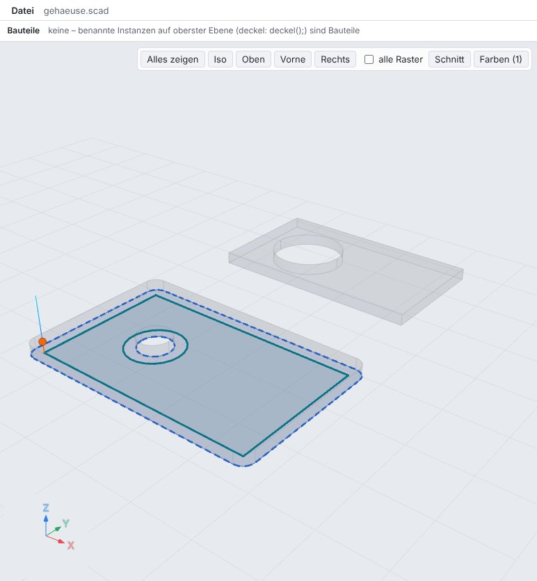
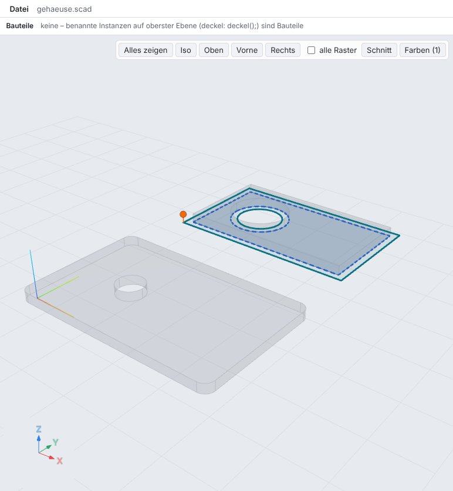
module platte() difference() {
square([40, 24]);
translate([12, 12]) circle(5);
}
linear_extrude(2) offset(r = 2) platte();
translate([0, 40, 0]) linear_extrude(2) offset(delta = -1.5) platte();- Offset-Konturen: 2
- Pixel: 2523
- Hülle −2 … 42 × −2 … 26
- innen: 2 Konturen
E04 stroke: Darstellung
Cursor auf stroke: der Pfad (offene Skizze) als Umriss, die Mittellinie gestrichelt, das Ergebnis als Fläche. Der Bogen wird zu einem exakten Ringsektor, die Kappen zu Halbkreisen; der Zickzack bekommt Gehrungen an den Knicken und flache Enden.
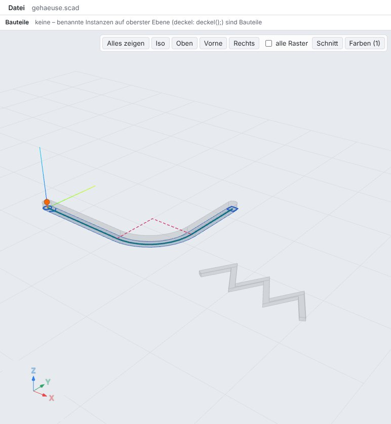
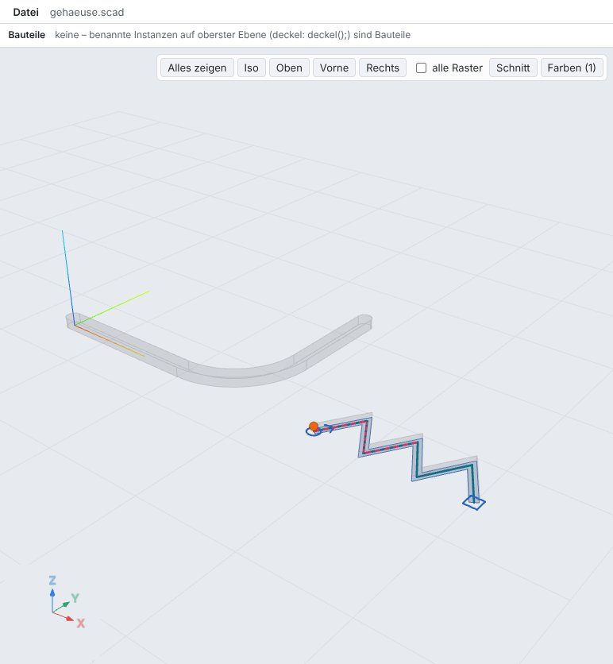
linear_extrude(2) stroke(3, cap = "round") sketch(closed = false) {
start([0, 0]);
line(to = [30, 0]);
arc(to = [45, 15]);
line(to = [45, 35]);
}
translate([60, 0, 0]) linear_extrude(1) stroke(1.5, cap = "flat", join = "miter") sketch(closed = false) {
start([0, 0]);
for (i = [1 : 6]) line(to = [5 * i, i % 2 == 0 ? 0 : 8]);
}- Mittellinien: 1
- Pixel: 184
- Zickzack: 1 Mittellinie
E05 Radius passt nicht
Der Radius passt nicht auf die kurze Kante: Fehler an der corner-Zeile mit dem größten passenden Wert; die Skizze bleibt mit der spitzen Ecke sichtbar, der Griff liegt am Eckpunkt.
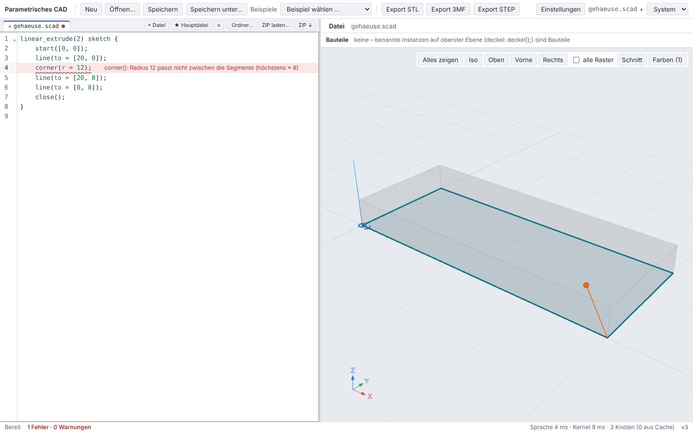
linear_extrude(2) sketch {
start([0, 0]);
line(to = [20, 0]);
corner(r = 12);
line(to = [20, 8]);
line(to = [0, 8]);
close();
}- 4: corner(): Radius 12 passt nicht zwischen die Segmente (höchstens ≈ 8)
9 Testläufe
| Lauf | Ergebnis |
|---|---|
cargo test --workspace --no-fail-fast | 49 bestanden, 0 fehlgeschlagen |
cargo clippy --workspace --all-targets -- -D warnings · cargo fmt --check | Befund · Abweichung |
pnpm typecheck · pnpm test (Vitest) | sauber · 215 bestanden |
pnpm e2e (Playwright, Chromium) | – |
tests/openscad-compat/compare.py --eval | – |
tests/step/verify.py (OpenCASCADE) | – |
tests/alltag/check.sh | – |
node crates/kernel-smlib/js/test-node.mjs | bestanden |
Neue bzw. erweiterte Rust-Tests (1):
sketch_corners_offset_stroke ok
Vitest: web/src/logic/sketch2d.test.ts (Offset-Kontur, Mittellinie, Zonen und Eckbögen von fillet2d, Radius-Griff von corner an Szenen der Beispiele). CLI: sketch_corners_offset_stroke (Volumen aller vier Operationen, Hinweis „4 Ecken“, Radius-Griff, Hilfslinien in render, Fehler an der corner-Zeile). Kompatibilität: openscad_compat, tree_bounds (Hüllen der neuen Modelle exakt über region_2d), spec_models (drei neue Beispiele).
10 Grenzen
offset(delta)an Bögen verlängert die Tangenten (Gehrung der Tangentenlinien) – OpenSCAD kennt dort nur Polygone. B-Splines gehen inoffset,strokeund 2D-Booleans als Biarcs (1 µm) ein, im Ergebnis stehen Bögen statt der Spline;cornerundfillet2deiner einzelnen Kontur behalten die Spline.fillet2d/chamfer2dhaben keinen Radius-Griff (nurcorner); Zonen sind 2D-Formen undzone(linie | ebene), 3D-Zonen werden mit Warnung ignoriert.- Die Region klassifiziert Teilstücke über Testpunkte im Abstand ~10−6 der Größe: Ränder, die sich näher kommen, ohne sich zu schneiden oder zu überlappen, können falsch eingeordnet werden. Kandidatenpaare über eine x-Sortierung (im schlechtesten Fall quadratisch).
- 2D-Booleans zwischen Ergebnissen (
difference() { stroke(…); stroke(…); }) bleiben 3D-Booleans der extrudierten Teile wie bisher; exakt in 2D rechnenoffset,fillet2d,stroke(über ihren ganzen Teilbaum). stroke: Gehrungsgrenze fest 4 Halbbreiten; ein Bogen mit Radius unter der halben Breite wird als Sektor plus gespiegeltem Sektor überstrichen. Fehler einer 2D-Operation unter einer Extrusion erscheinen an beiden Zeilen (wie bisher bei 2D-Fehlern).- Lofts verbinden Skizzen Segment für Segment und bekommen Bögen über 90° weiter als Kurven aus mehreren Spannen; ob SMLib-Booleans mit solchen Loft-Flächen dieselbe Schwäche haben, ist nicht geprüft.
cad render --line Neiner corner-Zeile hebt die ganze Skizze hervor (Hervorhebung des einzelnen Segments nur in der UI, wie in Bericht 14).